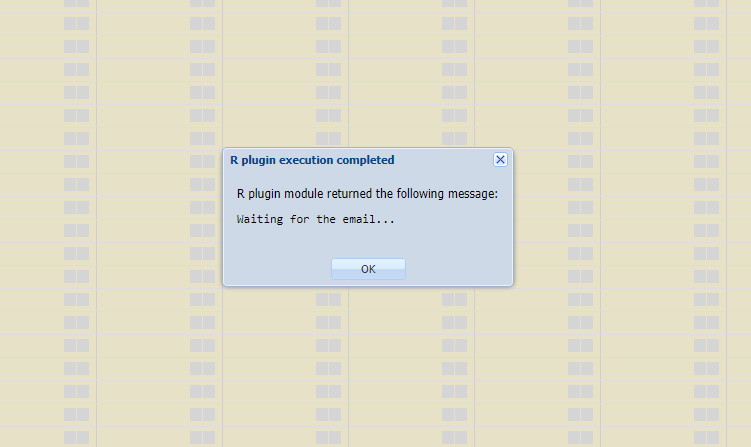

Chapter 5 The faoswsAquastatValidation module
The faoswsAquastatValidation emerges as a demand for quality assurance and quality checking tool (QA/QC) that screens AQUASTAT data sets to identify potential issues in the data. The idea is to identify and output a data set containing the information on what (elements), where (geographic areas), and when (year) the domain-knowledge in form of validation rules (logical tests) was violated.
Figure 5.1: Workflow of the faoswsAquastatValidation module
The faoswsAquastatValidation module shows that it is possible to use the domain-knowledge translated into validation rules stored as SWS data table to identify and locate potential errors in AQUASTAT - SWS framework data sets. By returning the areas, years, elements, values, flags, and expressions with potentially erroneous values, the module gives ammunition to the user to reduce the scope of the Quality Assurance and Quality Control process. As a consequence, the tool makes it easier to identify the nature of the errors and implement data correction based on the user domain - knowledge.
5.1 Steps
Below you find the description of the process to validate the data.
5.1.1 Applies validation rules
The validation module uses the AQUASTAT domain-knowledge converted into validation rules to identify errors in the data. The validation rules are logical test pre-defined by the technical unit and stored by the ESS-SWS team as an SWS data table called validation_rule_clone see @ (tab:tab14).
- The columns lhs and rhs represent the left and right sides of the validation rule expression.
- The operator the relationship between lhs and rhs that should be tested.
- The priority is a binary variable with 1 (MUST CHECK) and 0 (SHOULD CHECK).
| lhs | operator | rhs | priority |
|---|---|---|---|
| Value_4100 | > | Value_4103 | 1 |
| Value_4100 | > | Value_4300 | 1 |
| Value_4100 | > | Value_4313 | 1 |
| Value_4100 | > | Value_4317 | 1 |
| Value_4100 | > | Value_4102 | 1 |
| Value_4100 | > | Value_4303 | 1 |
| Value_4100 | > | Value_4304 | 1 |
| Value_4100 | > | Value_4306 | 1 |
| Value_4100 | > | Value_4307 | 1 |
| Value_4100 | > | Value_4308 | 1 |
| Value_4100 | > | Value_4309 | 1 |
| Value_4100 | > | Value_4310 | 1 |
| Value_4100 | > | Value_4311 | 1 |
| Value_4100 | > | Value_4314 | 1 |
| Value_4100 | > | Value_4315 | 1 |
| Value_4100 | > | Value_4316 | 1 |
| Value_4100 | > | Value_4318 | 1 |
| Value_4100 | > | Value_4321 | 1 |
| Value_4100 | > | Value_4320 | 1 |
| Value_4100 | > | Value_4322 | 1 |
| Value_4100 | > | Value_4326 | 1 |
| Value_4100 | > | Value_4333 | 1 |
| Value_4100 | > | Value_4334 | 1 |
| Value_4100 | > | Value_4345 | 1 |
| Value_4100 | > | Value_4379 | 1 |
| Value_4100 | > | Value_4400 | 1 |
| Value_4100 | > | Value_4401 | 1 |
| Value_4100 | > | Value_4402 | 1 |
| Value_4100 | > | Value_4465 | 1 |
| Value_4100 | > | Value_4526 | 1 |
| Value_4100 | > | Value_4513 | 1 |
| Value_4101 | <= | Value_4100 | 1 |
| Value_4102 | <= | Value_4101 | 0 |
| Value_4103 | > | Value_4313 | 0 |
| Value_4103 | > | Value_4300 | 0 |
| Value_4103 | >= | Value_4102 | 1 |
| Value_4103 | > | Value_4304 | 0 |
| Value_4103 | > | Value_4314 | 1 |
| Value_4103 | > | Value_4315 | 1 |
| Value_4103 | > | Value_4303 | 0 |
| Value_4103 | > | Value_4332 | 0 |
| Value_4103 | > | Value_4333 | 0 |
| Value_4103 | > | Value_4334 | 0 |
| Value_4103 | > | Value_4400 | 0 |
| Value_4103 | > | Value_4401 | 0 |
| Value_4103 | > | Value_4402 | 0 |
| Value_4103 | > | Value_4316 | 0 |
| Value_4103 | > | Value_4318 | 0 |
| Value_4103 | > | Value_4320 | 0 |
| Value_4103 | > | Value_4321 | 0 |
| Value_4103 | > | Value_4322 | 0 |
| Value_4103 | > | Value_4326 | 0 |
| Value_4103 | > | Value_4308 | 0 |
| Value_4103 | > | Value_4309 | 0 |
| Value_4103 | > | Value_4311 | 0 |
| Value_4103 | > | Value_4101 | 1 |
| Value_4103 | > | Value_4465 | 0 |
| Value_4103 | > | Value_4513 | 0 |
| Value_4103 | > | Value_4526 | 0 |
| Value_4104 *Value_4114 | "“==”" | Value_4105Value_4115Value_4106*Value_4116 | 0 |
| Value_4105/Value_4104 | >= | 0.12 | 0 |
| Value_4105/Value_4104 | <= | 0.85 | 0 |
| Value_4106/Value_4104 | >= | 0.14 | 0 |
| Value_4106/Value_4104 | <= | 0.88 | 0 |
| Value_4111 | <= | 1.0 | 1 |
| Value_4113 | <= | 100.0 | 1 |
| Value_4114 | <= | 100.0 | 1 |
| Value_4114 | >= | 48.0 | 0 |
| Value_4114 | <= | 90.0 | 0 |
| Value_4115 | <= | 100.0 | 1 |
| Value_4115 | >= | 36.0 | 0 |
| Value_4115 | <= | 90.0 | 0 |
| Value_4116 | <= | 100.0 | 1 |
| Value_4116 | >= | 76.0 | 0 |
| Value_4116 | >= | 90.0 | 0 |
| (Value_4150*100000)/Value_4100 | >= | 50.0 | 0 |
| (Value_4150*100000)/Value_4100 | <= | 2000.0 | 0 |
| Value_4154 | <= | Value_4157 | 0 |
| Value_4154 | <= | Value_4150 | 0 |
| Value_4155 | <= | Value_4157 | 0 |
| Value_4155 | <= | Value_4150 | 0 |
| Value_4156 | <= | Value_4154 | 1 |
| Value_4156 | <= | Value_4155 | 1 |
| Value_4157 | <= | Value_4150 | 1 |
| Value_4157/Value_4150 | <= | 0.5 | 0 |
| (Value_4157*100000)/Value_4100 | >= | 10.0 | 0 |
| (Value_4157*100000)/Value_4100 | <= | 1500.0 | 0 |
| Value_4158 | >= | 350.0 | 0 |
| Value_4160 | <= | Value_4159 | 0 |
| Value_4161 | <= | Value_4159 | 0 |
| Value_4167 | <= | Value_4165 | 0 |
| Value_4168 | <= | Value_4167 | 0 |
| Value_4170 | <= | Value_4169 | 0 |
| Value_4171 | <= | Value_4157+Value_4456 | 0 |
| Value_4174 | <= | Value_4173 | 0 |
| Value_4188 | >= | Value_4157 | 0 |
| Value_4188 | >= | Value_4182 | 0 |
| Value_4190 | >= | 560.0 | 0 |
| Value_4190 | <= | 93500.0 | 0 |
| Value_4192 | <= | 100.0 | 1 |
| Value_4250/Value_4253 | >= | 0.1 | 0 |
| Value_4250/Value_4253 | <= | 0.9 | 0 |
| Value_4250/Value_4317 | >= | 0.002 | 0 |
| Value_4250/Value_4317 | <= | 0.02 | 0 |
| Value_4250/Value_4317 | >= | 0.005 | 0 |
| Value_4250/Value_4317 | <= | 0.025 | 0 |
| Value_4251/Value_4253 | >= | 0.03 | 0 |
| Value_4251/Value_4253 | <= | 0.46 | 0 |
| Value_4252/Value_4253 | >= | 0.01 | 0 |
| Value_4252/Value_4253 | <= | 0.45 | 0 |
| Value_4254 | <= | 100.0 | 1 |
| Value_4255 | <= | 100.0 | 1 |
| Value_4256 | <= | 100.0 | 1 |
| Value_4257 | >= | 50.0 | 0 |
| Value_4258 | <= | 1430.0 | 0 |
| Value_4263 | "“==”" | Value_4261+Value_4262 | 0 |
| Value_4263 | < | 2000.0 | 0 |
| Value_4263 | <= | Value_4253 | 1 |
| Value_4265 | >= | Value_4490 | 0 |
| Value_4269 | <= | Value_4253 | 0 |
| Value_4269 | >= | Value_4493 | 0 |
| Value_4269 | "“==”" | Value_4270+Value_4491 | 0 |
| Value_4270 | <= | Value_4269 | 0 |
| Value_4270 | >= | Value_4265 | 0 |
| Value_4271 | <= | 100.0 | 1 |
| Value_4273 | <= | 100.0 | 0 |
| Value_4275 | <= | 100.0 | 0 |
| Value_4300 | <= | Value_4317 | 0 |
| Value_4303 | <= | Value_4300 | 0 |
| Value_4303+Value_4304 | "“==”" | Value_4300 | 0 |
| Value_4304 | <= | Value_4300 | 0 |
| Value_4305 | <= | 100.0 | 1 |
| Value_4305 | <= | 70.0 | 0 |
| Value_4308/Value_4313 | >= | 0.5 | 0 |
| Value_4308+Value_4309+Value_4310 | "“==”" | Value_4332+Value_4333+Value_4334 | 0 |
| Value_4309/Value_4313 | <= | 0.6 | 0 |
| Value_4310/Value_4313 | <= | 0.2 | 0 |
| Value_4311 | >= | Value_4308 | 1 |
| Value_4311 | >= | Value_4310 | 1 |
| Value_4311 | >= | Value_4310 | 1 |
| Value_4313 | <= | Value_4317 | 1 |
| Value_4313 | >= | Value_4326 | 1 |
| Value_4313 | >= | Value_4320+Value_4321+Value_4322+Value_4465+Value_4513+Value_4526 | 1 |
| Value_4311 | >= | Value_4321 | 1 |
| Value_4313 | >= | Value_4322 | 1 |
| Value_4313 | >= | Value_4303 | 1 |
| Value_4313 | > | Value_4465 | 1 |
| Value_4313 | > | Value_4513 | 1 |
| Value_4313 | > | Value_4526 | 1 |
| Value_4317 | <= | Value_4103 | 0 |
| Value_4318 | <= | Value_4313 | 1 |
| Value_4319 | <= | 100.0 | 1 |
| Value_4320/Value_4313 | <= | 0.7 | 1 |
| Value_4321/Value_4313 | <= | 0.9 | 0 |
| Value_4323 | <= | 100.0 | 0 |
| Value_4324 | <= | 100.0 | 1 |
| Value_4325 | <= | 100.0 | 1 |
| Value_4327 | <= | 100.0 | 1 |
| Value_4328 | <= | 100.0 | 1 |
| Value_4329 | <= | 100.0 | 1 |
| Value_4330 | <= | 100.0 | 0 |
| Value_4331 | <= | 100.0 | 0 |
| Value_4335 | >= | 1000.0 | 0 |
| Value_4335 | <= | 20000.0 | 0 |
| Value_4339 | >= | 1000.0 | 0 |
| Value_4339 | <= | 20000.0 | 0 |
| Value_4343 | >= | 1000.0 | 0 |
| Value_4343 | <= | 20000.0 | 0 |
| Value_4344 | >= | 1000.0 | 0 |
| Value_4344 | <= | 20000.0 | 0 |
| Value_4379/Value_4317 | >= | 0.5 | 0 |
| Value_4400 | <= | Value_4313 | 0 |
| Value_4401 | <= | Value_4313 | 0 |
| Value_4401/Value_4313 | <= | 0.5 | 0 |
| Value_4403 | <= | Value_4104 | 1 |
| Value_4445 | <= | 100.0 | 1 |
| Value_4446 | <= | 100.0 | 1 |
| Value_4450 | <= | 100.0 | 1 |
| Value_4475 | <= | Value_4250 | 0 |
| Value_4493 | >= | Value_4270 | 1 |
| Value_4546 | <= | Value_4112 | 0 |
| Value_4547 | <= | Value_4112 | 1 |
| Value_4548 | <= | Value_4112 | 1 |
| Value_4550 | <= | 100.0 | 1 |
| Value_4555 | <= | 100.0 | 0 |
| Value_4556 | <= | 100.0 | 1 |
5.1.2 Focuses on high priority rules
The module ratains the rows in the input dataset that violated one or more PRIORITY validation rules.
5.1.3 Reshapes and adds names to data
The modules reshapes the faulty-rules dataset to a long-format and adds to it the geographicAreaM49 and AQUASTAT element names.
5.1.4 Sends the output to the user email
With geographicAreaM49 and AQUASTAT elements in the output facilitating the interpretation, the module sends the output as .csv file to the user email (FAO corporate account). The .csv file attached in the email is named validation_name of the dataset input in SWS.csv and has the following columns:
geographic_area_description. The name of the country indicating where the validation rule (expression) did not pass the logical test;
timePointYears. The year indicating when the validation rule (expression) did not pass the logical test;
aquastatElement. The aquastatElement code;
aquastatElement description. The aquastatElement name(s) in the failing validation rule (expression);
Value. The values of aquastatElement(s) in the geographic area and year that may be potentially erroneous;
flagObservationStatus (if input has the flagObservationStatus dimension) or flagAquastat (if input is the aquastat_enr data set). The flag of the potentially erroneous values;
flagMethod (if input has the flagMethod dimension). The flag pointing the method used to obtain the potentially erroneous values;
expression. The validation rule that was violated and detected by the module.
5.2 Running the module in the SWS
Log into the SWS;
Click on the New Query button;
Choose Aquastat domain;
Choose an AQUASTAT dataset to be screened (remember they are the inputs!);
Select all countries, all elements, and all years;
Click on Run beside the save button to query the data;
Figure 5.2: Running the module in SWS: steps 1 to 6
Click on the Run plugin button;
Select the faoswsAquastatValidation module and click on the Run plugin button;
Figure 5.3: Running the module in SWS: steps 7 to 8
- Wait for the output in your FAO email inbox;

Figure 5.4: Running the module in SWS: step 9
- Check your inbox.
- The send is ‘sws@fao.org’.
- The subject is ‘The AquastatValidation is finished’.
- The .csv file name is validation_nameofthedataset.csv.
Figure 5.5: Running the module in SWS: step 10